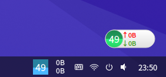
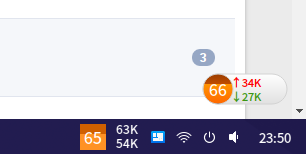
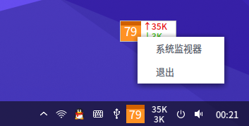
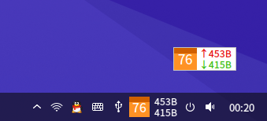

内存网速监测-悬浮版 v0.5.1 17.12.17_11:14:1217.12.xx 增加了cpu占用率查看，可放置桌面显示各cpu占用率。
17.03.15 增加贴边半球显示效果 增加单击弹出简易任务管理器功能
17.03.04 贴边缩小 17.02.07 改了下，做出了一年多前最初想做的样子，但是内存占用多了400K 
 =============
重新打包的，包的名字已经变了，以前安装过的先卸载，再安装这个。
修了和dde插件版一样的bug，比插件版少看cpu占用的功能。


项目地址：https://github.com/noahsai/monitor-desktop 下载地址：https://pan.baidu.com/s/1bpL2Njp |